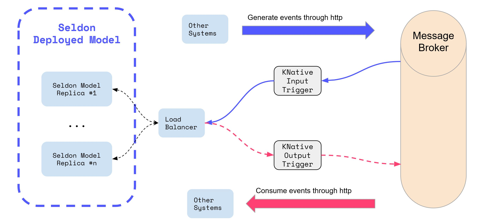

KNative 事件集成¶
Seldon 实现了集成 KNative 事件的实时处理。
这允许 Seldon Core 用户通过触发器接收任何 来自 SeldonDeployments 的 Cloudevents 事件。
{kind=link}
触发器¶
KNative Eventing 的工作方式是创建相关触发器发送到匹配到的相关位置。
Seldon Core 实现了 KNative Eventing Duck Typing 要求，允许用户创建引用特定 SeldonDeployments 的触发器。
可以使用以下格式创建名为 「iris-deployment」 的 SeldonDeployment 触发器示例：
apiVersion: eventing.knative.dev/v1beta1
kind: Trigger
metadata:
name: seldon-eventing-sklearn-trigger
spec:
broker: default
filter:
attributes:
type: seldon.iris-deployment.default.request
subscriber:
ref:
apiVersion: machinelearning.seldon.io/v1
kind: SeldonDeployment
name: iris-deployment
这意味着任何类型为 「seldon.iris-deployment.default.request」 的 Cloudevents 都将被发送到名为 iris-deployment 的 SeldonDeployment。
URL 路径是通过我们从 Knative 中实现的 Duck Typing 来推断的，它会自动从 Kubernetes 资源状态中提取 URL，特别是从属性 status.addressable.url 中提取 URL。
对于每个 Seldon 部署，status.addressable.url始终是第一个预测器的服务名称、端口和路径。您可以在我们的 CRD 定义中看到 Addressable 类型。
覆盖 URI¶
在有多个预测器的情况下，或者您想通过入口发送 Cloudevent 的情况下，您实际上可以创建一个覆盖 URI 的触发器。这方面的一个例子如下：
apiVersion: eventing.knative.dev/v1beta1
kind: Trigger
metadata:
name: seldon-eventing-sklearn-trigger
spec:
broker: default
filter:
attributes:
type: seldon.iris-deployment.default.request
subscriber:
uri: http://istio-ingressgateway/seldon/default/iris-deployment/api/v1.0/predicions
然后它将创建一个触发器，将该类型的消息转发到该 URI。
发送测试请求¶
在生产中，您将有多个服务从各种不同的来源创建云事件。但对于测试，可以通过本地 docker 镜像通过终端使用 curl 向 KNative Eventing 代理发送请求：
kubectl run --quiet=true -it --rm curl --image=radial/busyboxplus:curl --restart=Never -- \
curl -v "default-broker.default.svc.cluster.local" \
-H "Ce-Id: 536808d3-88be-4077-9d7a-a3f162705f79" \
-H "Ce-specversion: 0.3" \
-H "Ce-Type: seldon.iris-deployment.default.request" \
-H "Ce-Source: seldon.examples.streaming.curl" \
-H "Content-Type: application/json" \
-d '{"data": { "ndarray": [[1,2,3,4]]}}'
这将会发送 seldon.iris-deployment.default.request 类型的云事件到默认空间的代理，它将自动匹配到实例中提供的触发器。
Seldon Cloudevent 响应¶
当接收到 Cloudevent 时，SeldonDeployments 将返回一个 Cloudevent 响应，该响应可供其他服务使用。
这意味着您可以创建更多触发器，这些触发器可以对结果数据执行其他操作。
触发器必须匹配是 SeldonDeployment 标准化的 cloudevent 标头，格式如下：
Ce-Id: SeldonDeployment unique request ID
Ce-Specversion: Version of the specversion used (default: 0.3)
Ce-Type: seldon.<sdep_name>.<namespace>.response
Ce-Source: seldon.<sdep_name>.<namespace>
这意味着你可以为 default 空间下的 seldon 部署 iris-deployment 创建一个触发器，如示例 pod 中创建了一个 event-display 可以打印 cloudevent 内容的触发器：
---
# Trigger to send events to service above
apiVersion: eventing.knative.dev/v1alpha1
kind: Trigger
metadata:
name: event-display
spec:
broker: default
filter:
attributes:
type: seldon.iris-deployment.default.response
source: seldon.iris-deployment
subscriber:
ref:
apiVersion: v1
kind: Service
name: event-display
---
# event-display app deploment
apiVersion: apps/v1
kind: Deployment
metadata:
n
ame: event-display
spec:
replicas: 1
selector:
matchLabels: &labels
app: event-display
template:
metadata:
labels: *labels
spec:
containers:
- name: helloworld-python
image: gcr.io/knative-releases/github.com/knative/eventing-sources/cmd/event_display
---
# Service that exposes event-display app.
# This will be the subscriber for the Trigger
kind: Service
apiVersion: v1
metadata:
name: event-display
spec:
selector:
app: event-display
ports:
- protocol: TCP
port: 80
targetPort: 8080
这将显示与 SeldonDeployment 处理的所有云事件。
动手实例¶
我们有一个完整的笔记本，我们可以在其中端到端地展示这些功能。
您可以通过 Seldon Core KNative Eventing 实时流处理页面亲自尝试